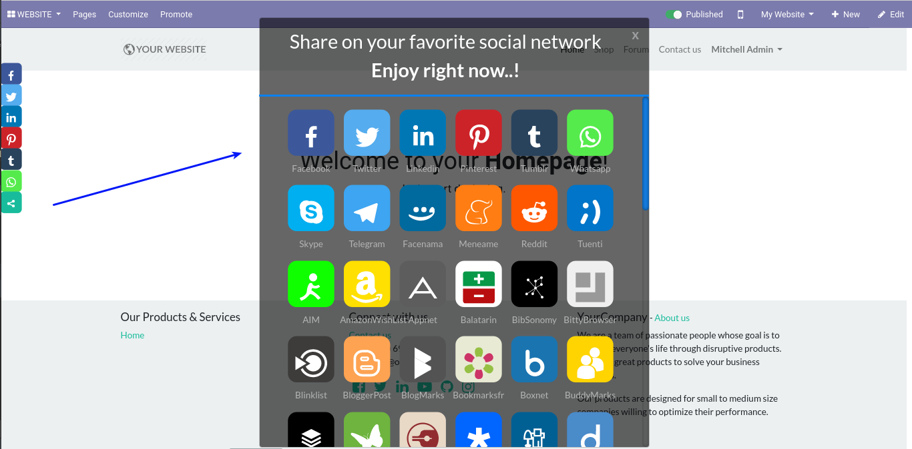

Floating Share Social Media Buttons
More than 22 billion shares are viewed each and every day on the internet, with sharing becoming an increasingly important part of every website owners marketing strategies. With this plugin, you can give users a tool to share your website (posts/pages/products) via their accounts on popular social networks.
Install and start driving high quality referrals to your website. 
Users by sharing the content of your website, will give you these benefits: increase web visibility, increase referrals and improve SEO, promote your company for free.